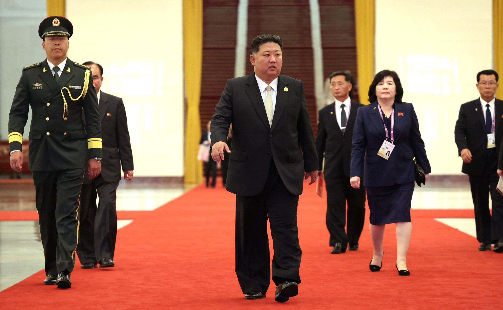

“Estos ejercicios envían una señal totalmente inapropiada y hostil a un país que ha sido totalmente inofensivo y respetuoso”. Con estas palabras el presidente de Estados Unidos Donald Trump anunció este verano que cancelaba unos ejercicios militares conjuntos con Corea del Sur. Casi veinticinco años después de que George W. Bush incluyera a Corea del Norte en el eje del mal, el país asiático no ha sufrido una intervención militar y los problemas internos no han tambaleado a su estado. Por el contrario, la economía parece haberse estabilizado y su posición internacional mejorado sin necesidad de abrir la sociedad más aislada del mundo. Entre rumores infundados y chistes, uno de los estados más represivos del planeta se ha convertido en un importante agente internacional.
El único en pie
Irak, Irán y Corea del Norte. Esos fueron los tres países que el presidente George W. Bush aseguró en 2002 que formaban el eje del mal y solo Corea del Norte ha logrado evitar el ataque estadounidense. La gran diferencia entre ellos tres es que ni el actual líder supremo, Kim Jong-un, ni su padre abandonaron su ambición nuclear. En 2006, el país asiático realizó sus primeros tests de armas nucleares atrayendo condenas internacionales. El Consejo de Seguridad de la ONU (en el que se encuentran Rusia y China) aprobó algunas de las mayores sanciones jamás impuestas, pero ninguno de sus miembros realizó un despliegue militar. La comunidad internacional pareció aceptar que la disuasión nuclear de Pyongyang había logrado su objetivo, por lo que buscaron métodos indirectos para acabar con el régimen y su plan militar. Sin embargo, aunque sea a regañadientes, China no quiere que pase eso.

Fuente: Kremlin
Corea del Norte pasó su mayor crisis del siglo XXI durante la pandemia del COVID-19. El poco comercio del que disponía se desplomó y el plan autárquico no consiguió los resultados necesarios. Kim Jong-un tuvo que pedir perdón públicamente por “no estar a la altura de las expectativas” en un discurso en el que se le vió llorar. No obstante, para finales de 2021 China empezó a violar las sanciones que ella misma había aprobado para introducir ilegalmente productos y materiales en Corea del Norte. Aunque la relación entre Pyongyang y Pekín sea complicada más allá de formar un frente común contra Estados Unidos, China lo que más desea es estabilidad en el continente para continuar con su avance comercial. Incluso aunque un estado nuclear sea una amenaza, para China es preferible esa situación a un colapso del estado norcoreano que provoque un fuerte flujo migratorio en su frontera. Corea del Norte ha aprovechado esta relación comercial y ha conseguido en pocos años grandes logros económicos, con un crecimiento interanual de hasta el 4%, más o menos el doble que la zona euro.
Aunque siga siendo una sociedad con un bajo nivel de vida comparada con su vecino del sur, el que algunos medios han catalogado como un milagro económico ha conseguido reflotar a un estado que en los noventas ya estuvo al borde del colapso debido a una de las mayores hambrunas del siglo pasado, pero es posible que ahora pueda hacer algo más que simplemente sobrevivir.
Más que un loco con una bomba
Se calcula que alrededor de un tercio del PIB de Corea del Norte está relacionado con el complejo industrial-militar. Lo que comenzó como una forma de defenderse ante posibles amenazas se ha convertido en su principal baza diplomática. A finales de 2024, se encontraron los primeros indicios de soldados norcoreanos en suelo ucraniano. Ante un ejército ruso que estaba teniendo problemas para movilizar a la población, Corea del Norte se involucró en el conflicto para aumentar los lazos diplomáticos y comerciales con Moscú. De igual forma, en 2026 Kim Jong-un y el presidente bielorruso Aleksandr Lukashenko firmaron un tratado de amistad entre ambas naciones. Todos estos movimientos probablemente expliquen el contenido de la reunión que Kim Jong-un tuvo con el presidente chino Xi Jinping y el presidente ruso Vladimir Putin en el Desfile del Día de la Victoria de China en 2025.
Corea del Norte cambió su Constitución, acabó con toda mención a una reunificación coreana y describió a Corea del Sur como el “rival primario e invariable enemigo principal” a mediados de este año
A pesar de ello, tampoco se está abandonando el poder blando. Poco a poco, Corea del Norte está destacando en más competiciones deportivas internacionales en un esfuerzo de aumentar el orgullo nacional, parte indispensable de la ideología del régimen. Además de su participación en las Olimpiadas, el país ha logrado convertirse en una importante potencia en el fútbol femenino donde este año se han enfrentado a España en la final del mundial SUB20. Y aunque lleve paralizado desde la pandemia, también se han mostrado numerosas obras en la capital orientadas a convertir al país en un destino turístico.
Una importancia creciente
Corea del Norte cambió su Constitución, acabó con toda mención a una reunificación coreana y describió a Corea del Sur como el “rival primario e invariable enemigo principal” a mediados de este año. Una mejor situación económica y geopolítica no parecen haber acabado con la actitud confrontacional del país. Sin embargo, queda muy lejos del estado fallido que muchas personas se imaginan en Europa. Su industria militar le ha convertido en un actor importante a nivel internacional mientras que paulatinamente parece querer incorporarse en los eventos de los que ha sido excluido durante mucho tiempo. Lejos de ser una distopía o un hombre del saco para occidente, el país, que según la ONU sufre de violaciones de derechos humanos “sin paralelo en el mundo contemporáneo”, es una nación a tener en cuenta.